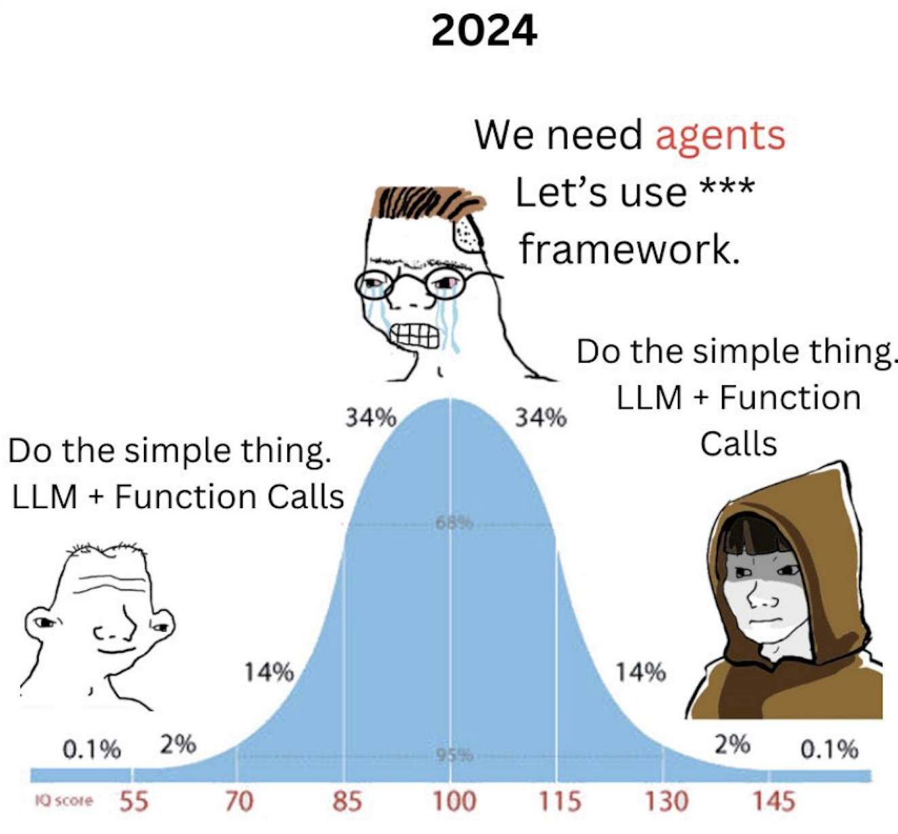

Star history of agentic AI frameworks, data retrieved on 2025-02-28 from star-history.com.
2025 could be the year of agentic AI. The first agentic AI demos came out in early 2023 and the technology has gained momentum through better tools, smarter models, and the first successful commercial products. The interest in agentic AI is also reflected in the number of GitHub stars for frameworks:
Interest is also high among business leaders. Deloitte’s Jul/Sep 2024 State of Generative AI in the Enterprise Survey showed that agentic AI garners the highest attention of all GenA-related developments, with 52% of C-suite-level respondents indicating interest in it (page 27).
But not every app needs agentic AI and not everyone believes in the hype. As ML influencer Maria Vechtomova puts it in a LinkedIn post:
I’m so tired of the #AI hype… How many more millions will companies waste trying to adopt AI agents for any possible use case before the bubble bursts?
and consultant Hamel Husain posted this meme:

Is agentic AI a hype or the key to the next generation of AI apps? This article provides a balanced look at it, written to help you decide whether agentic AI is right for your use case. It won’t go into the details of any specific agentic AI frameworks, but rather focus on the principles and tradeoffs.
Four levels of agency
To start, let’s establish a definition of what an agent is. The simplest definition I found is from Eugene Yan on LinkedIn:
agent ≈ model + tools, within a for-loop + environment
Let’s break this down:
- Model: an LLM receiving inputs tokens and outputting response tokens
- Tools: function definitions provided to the model, e.g.
search_web(query: str) -> strthat it can provide arguments to in its response - For-loop: the model is called multiple times, with the output of one call being the input to a tool or another call
- Environment: the runtime calling the model, providing it with access to tools, data, and tracking the state of the workflow
This definition is a great starting point and cuts through the overthinking and hype. It needs one more element to be complete:
Degree of agency: The agent is in charge of the workflow. It decides on what to do next to pursue a given goal. This can be categorized into 4 levels:

- Single call, single tool: the model is called once with a single tool provided
- Single call, multiple tools: the model is called once with multiple tools provided and the model decides which ones to use
- Fixed workflow: the model is called multiple times with a predetermined sequence of prompts, feeding the output of one call into the next
- Open-ended workflow / true agentic AI: the model is called multiple times with a flexible sequence of prompts, feeding the output of one call into the next, and choosing the end of the loop independently
The order of levels 2 and 3 is debatable. Level 2 adds the tool decision, level 3 adds having multiple steps. Level 4 has both, is open ended and is the only true agentic one.
The main question of this article is to provide a framework to decide whether the jump from level 3 to level 4 is worth it for a given use case. We will look at the new use cases unlocked and the tradeoffs involved.
Note
The LLM in a for-loop definition used here is the simplest possible. If you’re looking for a more sophisticated definition, check out Weaviate’s article (Feb 2025) that offers a history of the methodology, Anthropic’s article (Dec 2024) describing common workflow patterns including parallel operations, and Chip Huyen’s article (Jan 2025) that goes into detail on the planning phase of agentic workflows. Acharya and Kuppan provide an formal ontology (Jan 2025) of agents.
Real world use
The AI Agent Index by Casper et al. from MIT tracks the number of agentic AI systems deployed by large organizations. The number of agents deployed is growing every month. Their requirements for inclusion are strict and likely undercount the actual number of agents deployed.
Let’s take a look at the most promising use cases. Click on the use cases to expand them.
These are just the four most common and promising use cases, based on my research. Google Cloud lists a whopping 321 gen AI use cases, and Microsoft also lists more than 300. Only a minority of them are truely agentic though, the majority are on levels 1 to 3. In addition to these publicly available examples, companies are developing internal tools to solve all kinds of problems, ranging from report generation to automated pricing updates.
Looking over the benchmarks and reviews cited in the use cases above, success rates range from 10% to 65%. Clearly, agentic AI is not ready for unsupervised high stakes jobs. It needs oversight by a human expert.
Compounding error problem
Each step in an agentic workflow has a chance of introducing an error. Let’s model this in a simplified way where each step has the same error rate and there is no error recovery. The graph below shows the chance of the workflow being correct as a function of the number of steps, for different error rates.
Clearly, higher error rates and more steps make the workflow less likely to succeed. A developer that values correctness has to obsess over error rates and keep the number of steps low.
Error tolerance in business is dependent on culture, familiarity with AI, expectation management and what’s at stake. Let’s consider examples of different errors:
| Error | Example | Mitigation |
|---|---|---|
| Planning failure | Agent misunderstands the goal, the constraints or the tools that it has available and plans a path that spins in circles, crashes or returns an incorrect answer. | Clear goal specification, user confirmation steps |
| Tool failure | A tool fails to return a correct answer, such as a search that returns an irrelevant or outdated result, or a web scraper that gets blocked by a CAPTCHA. Some errors are loud (e.g. the CAPTCHA), whereas others are silent and poison the output. | Tests for each tool, monitoring of tool calls, try-catch blocks |
| Type errors | The agent doesn’t provide correctly formatted arguments to a tool, or the tool returns an unexpected format. | Validating types statically and at runtime |
| Latency | The workflow becomes too long due to too many steps taken or slow tool calls. Users get bored and abandon the agent. | Parallelization, caching, limiting the number of steps |
Agents causing harm
In the previous section, we considered failure modes that cause inconvenience. However, agents can also cause harm in the form of data loss, financial damage, legal liability or cyber security incidents.
- User error. For example, giving unclear instructions that lead to a wrong file being overwritten or a message sent to the wrong person. Ask the user for confirmation and give them a way to undo the action, where possible.
- Model error. A tool could misunderstand the user’s intent or the way a tool works.
- Prompt injection. LLMs are susceptible to prompt injection, meaning someone hijacking the workflow by overriding the original instructions with a clever prompt. Malicious prompts can be found on websites, received via emails or be hidden in the user’s files.
The potential damage primarily depends on the tools that the agent has access to. Consider what the worst thing is that the agent could do with a tool. If that is unacceptable, limit the agent’s access. For example, an agent that can access a database could only be allowed to read, not write, or to only write to a specific append-only table. Payments, deleting data, and other dangerous actions should require user confirmation.
Not every workflow needs agentic AI
Based on the previous case studies and analysis of error rates, here’s a list of reasons to use agentic AI and reasons to avoid it:
Reasons to use agentic AI ✅
- The problem space is too large to enumerate every path
- Every interaction is truly different
- The problems are hard enough that only a flexible multi-hop system can solve them
- High payoff for successful resolution (e.g. saving a human a lot of work)
- Low cost of exploration and occasional missteps
- You have the necessary time to evaluate the agentic workflow, install safeguards
- You value the ease of adding new tools to an agentic workflow
- The tools the agent would use already work independently, so it’s just a matter of coordinating them
Reasons to avoid agentic AI ❌
- The task can be described as a fixed workflow of steps
- Low latency is required
- Low error tolerance, e.g. for legal, organizational or social reasons
- Need to keep token usage low
- Need predictable workflows
- Need high explainability
- Need to prove that every step of the workflow is correct
- Agentic AI frameworks are not mature yet
- Cybersecurity concerns from prompt injection and other attacks
Agents aren’t all or nothing - there are many shades of agentic AI. Each level of agent autonomy increases the surface area for errors. Therefore, it can be wiser to use a hybrid approach that is level 2 or 3 on the agency scale above, with fixedsteps and tool selection, and limited decision making by the agent. Ask: Is the task really so complex and open-ended that it can’t be described as a fixed series of steps and decision points?
Converting agentic workflows to fixed workflows
In city planning, there’s the concept of a “desire path”. Rather than walking the long, intended path, people take a shortcut. There’s an urban legend that when Dwight D. Eisenhower was in charge of an extension of Columbia University, he let students walk on grass until natural paths had formed, and then had them paved.
This concept could be applied to agentic workflows. Start by giving an agent the freedom to choose tools and order of execution. Observe which paths are taken and which result in success. Then pave those paths by making them fixed workflows, enabling greater reliability.
So you want to build an agentic workflow?
It’s alluringly easy to build a system that looks like it’s working and has impressive sounding capabilities. Just copy-paste from the documentation of a popular agent tool. Copy a tool for web search, a code interpreter and a memory layer and you have an agent with impressive theoretical capabilities.
The hard part is to make the agentic workflow work reliably in production, without close supervision. And that’s where the business value is – a demo doesn’t repay an investment.
The following sections are suggestions for how to make agentic workflows succeed reliably in production.
Start with solid software engineering
The building blocks of agentic workflows are not new: loops, strings being passed between tools, arrays of floats for embeddings, HTTP requests, JSON. So the established concepts of writing clean code, enforcing type safety, having a test environment and running automated tests apply. A good agentic app starts with a good app.
Agent frameworks are optional
Going back to Eugene Yan’s definition of agents as “model + tools, within a for-loop + environment”, it’s clear that agents can be implemented in any programming language that can make HTTP requests. In Building Effective Agents, Anthropic notes:
Consistently, the most successful implementations weren’t using complex frameworks or specialized libraries. Instead, they were building with simple, composable patterns.
So should you use an agent framework or not? Let’s examine the tradeoffs:
Reasons to use frameworks ✅
- Boost early development speed with pre-packaged patterns and integrations
- Provide mental models for workflow structure (e.g. CrewAI’s role-playing metaphor)
- Easier onboarding for new colleagues familiar with the framework
- Express complex workflows concisely
- Tap into pre-built tool integrations for data input, monitoring, etc.
Reasons to avoid frameworks ❌
- Often immature with frequent bugs and unclear documentation
- Breaking API changes
- Many dependencies
- Force programming in “framework way”
- Many have a monolithic design, instead of composable unix philosophy
- Tendency to reinvent the wheel in a less production grade way
- Steep learning curve, depending on the framework
As a case study, the AI test automation company Octomind wrote an article comparing LangChain to vanilla Python, explaining why they moved away from frameworks altogether.
Trace every step
Regardless of whether you use an agent framework or not, effective monitoring is a must. The first thing to put into place is a system that logs every step of the workflow: user inputs, transformed inputs, tool choices, tool calls, tool call results, reasoning tokens, output, latency, token usage, etc. The best and easiest time to set this up is right at the start of the project. As the project grows, set up a dashboard and alerts for critical metrics.
There’s no substitute for manual inspection
Manual inspection of data has probably the highest value-to-prestige ratio of any activity in machine learning.
Greg Brockman, President and co-founder of OpenAI
Before going to automatic tests, LLM as judge etc., inspect some workflows manually using the monitoring system. Check the input, the tool calls, the intermittent reasoning tokens, and the output. Many problems can be diagnosed this way. In addition, it peels away some of the “magic” that agentic frameworks by showing the prompts and tool calls. Hamel Husain put it well in an article, asking “Show me the prompt” of every LLM library. Manual inspection keeps yielding insights, even after automatic evals are in place.
Conclusion: Build as agentic as needed, not as agentic as possible
As shown by benchmark scores and user reviews, agentic AI is currently a “65% solution”. There are impressive demos, but the real world is messy. The gap needs to be bridged by careful safeguards, domain-specific heuristics, smart task framing, and human oversight. Much like operating a self-driving car, users need to stay alert and be ready to take control at any moment. However, consider that human workers also make mistakes - perfection is not a realistic benchmark.
From a business perspective, there is still an enormous amount of value to be realized by simpler uses of generative AI. Going all-in on agentic AI may not be necessary. Consider the pros and cons listed above and locate the task at hand on the four-level agency scale.